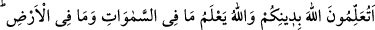

SİZ DİNİNİZİ
ALLAH’A MI ÖĞRETİYORSUNUZ?
15. Müminler ancak Allah’a ve Rasûlüne iman eden, ondan sonra asla şüpheye
düşmeyen, Allah yolunda mallarıyla ve canlarıyla savaşanlardır. İşte doğrular ancak
onlardır.
16. De ki: Siz dininizi Allah’a mı öğretiyorsunuz? Oysa Allah göklerde olanları da
bilir, yerde olanları da. Allah her şeyi hakkıyla bilendir.
17. Onlar İslâm’a girdikleri için seni minnet altına sokuyorlar. De ki:
Müslümanlığınızı benim başıma kakmayın. Eğer doğru kimselerseniz bilesiniz ki,
sizi imana erdirdiği için asıl Allah size lütufta bulunmuştur.
18. Şüphesiz Allah, göklerin ve yerin gizliliklerini bilir. Allah yaptıklarınızı
görendir.
Âyette îmanı nefyedecek bir şeyin kendilerinde var olduğuna işaret vardır ki, bu da
şüpheye düşmektir. ‘Sonra’ anlamına gelen ( ) edatı, imanın muteber oluşundaki
şüpheye düşmeyişin sadece îmânın inşası esnasında olmayıp ileride de söz konusu
olduğuna işaret etmektedir. Bu “Şüphesiz, Rabbimiz Allah’tır deyip, sonra dosdoğru
yolda yürüyenler…” (Fussilet 41/30) âyetindeki ( ) ‘sonra’ gibidir.
“… Allah yolunda mallarıyla ve canlarıyla savaşanlardır.” Gerek bedenî, gerek sırf
mâlî ve gerekse hac ve cihad gibi hem bedenî hem mâlî ibadetler olsun, çeşitli
sahalarda Allah’a kulluk ve taatte bulunurlar.
Yukarıda sayılan güzel vasıflarla vasıflanmış olanlar ancak îman dâvâsında
sâdıktırlar; başkaları değil. Bu âyette doğruluk bazı kimselere hasredilmekte ve Benû
Esed kabilesinin bedevîleri tekzib edilmektedir. Onlar kendilerinin de bu vasfa ortak